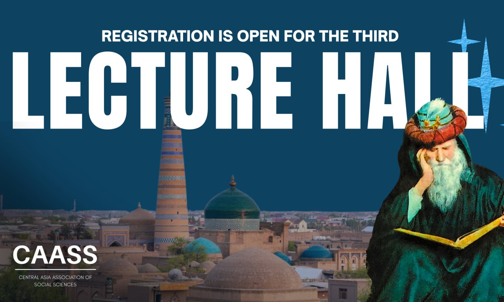
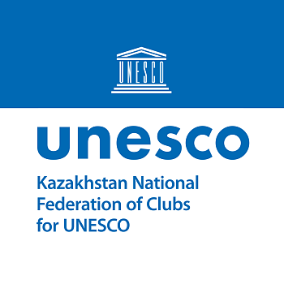
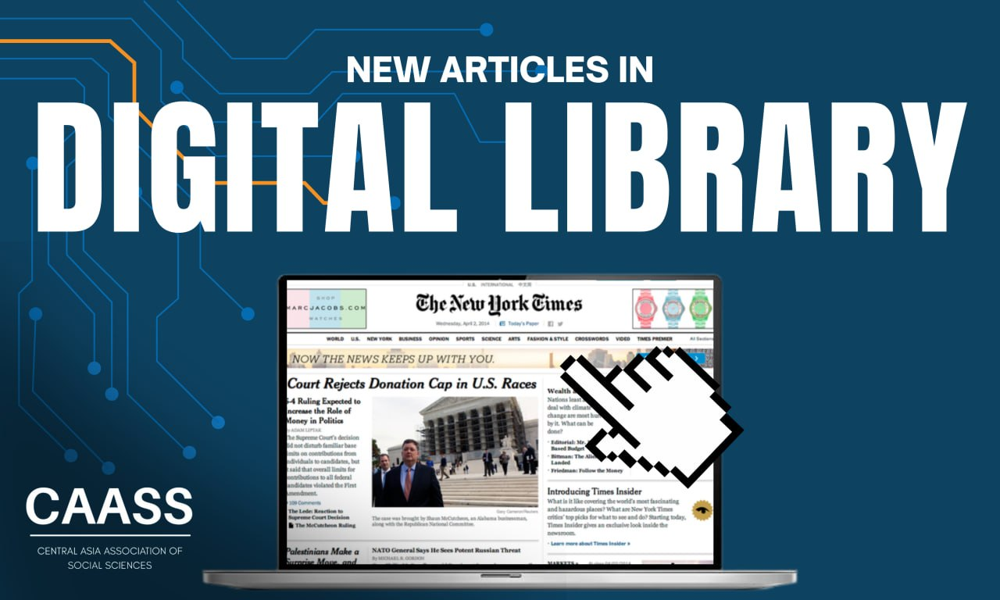

Июнь 2026
Студенческая инициатива по развитию социальных наук и гуманитарных дисциплин в Центральной Азии.
Central Asian Association of Social Sciences (CAASS) is a student-led educational initiative dedicated to promoting social sciences and humanities in Central Asia. We organize lectures, seminars, essay competitions, and conferences to create a strong academic network of high school students, university students, and professors. We believe that social sciences complement the region's strong STEM focus and are essential for understanding society and global challenges. Our goal is to support students preparing for majors such as political science, international relations, economics, sociology, law, and related fields.

ЮНЕСКО — Федерация клубов в Казахстане


